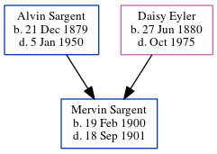

Mervin Charles Sargent 1900 - 1901
[ Home ] | [ Calendar ] | [ Surnames Index ] | [ Census Index ] | [ Family History ]The eldest of 3 children of Alvin Sargent (an agricultural laborer) and Daisy Eyler, Mervin Sargent, the fourth cousin twice-removed on the mother's side of Nigel Horne, was born in Nebraska, USA on Feb 19, 19001. On Jun 14, 1900, he was living in Canada, Polk, Nebraska1.
He died on Sep 18, 1901.
Parents
- Alvin Edmund was born on Dec 21, 1879
- Daisy Elva was born on Jun 27, 1880
Citations
- US Census 1900 - Findmypast (was the son of the head of the household)
Media
1900 US Census Transcription - USC-1900-004120377-00662-021
Us Census 1900 - USC-1900-004120377-00662-023
Family Tree
Generated by ged2site. Last updated on Jun 11, 2024